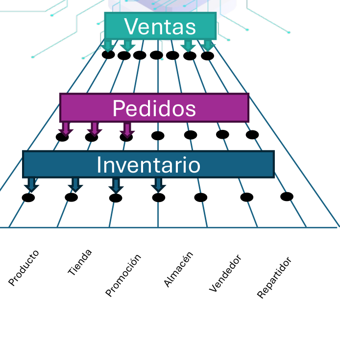
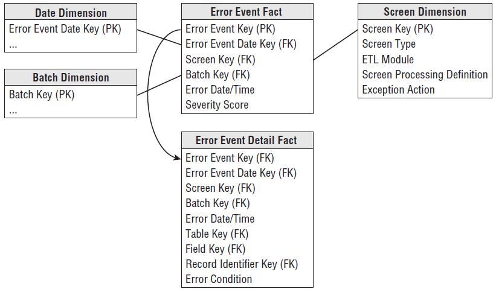
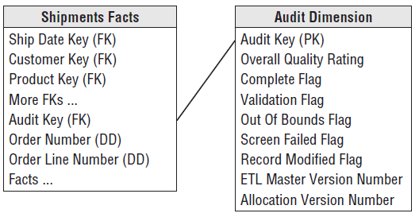
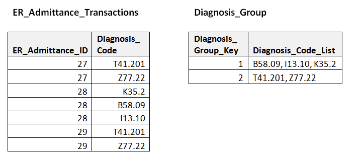
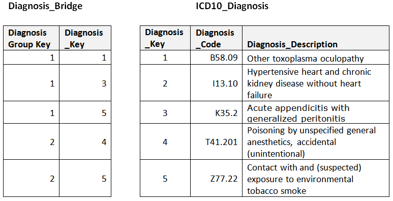

Extracción, Transformación y Carga (ETL)
Tema 2 de 6 Cuarto curso, 1.º cuatrimestre ≈ 16 min de lectura
Temas de MYAD · 2/6
2.1 Introducción
El sistema ETL (Extract, Transform, Load) es el puente entre los sistemas operacionales "fuente" y el almacén de datos (DW). Sus tres fases son:
- Extraer de los sistemas operacionales: leer y comprender los datos de las fuentes, que muchas veces (no siempre) son sistemas OLTP. No es sencillo, por la complejidad y la falta de documentación de las fuentes, y porque puede ser necesario repetir la operación muchas veces.
- Transformar: limpiar los datos, combinar los de varias fuentes y eliminar duplicados, hasta dejarlos en un estado consolidado que pueda pasar al almacén.
- Cargar los datos en el DW.
El desarrollo del ETL supone un porcentaje muy grande del esfuerzo de construir un entorno DW/BI, así que hay que gestionarlo con eficiencia. Puede programarse a mano, pero existen herramientas que ayudan, como Pentaho Data Integration.
Analogía
El ETL es la cocina de un restaurante: los proveedores (fuentes) traen ingredientes de calidad desigual y en formatos distintos; en cocina se lavan, se descartan los malos, se cortan y se combinan (transformar), y al final se emplatan en la sala (el DW), donde el cliente (el usuario de BI) solo ve platos listos para consumir.
Para entenderlo mejor
DATOS: PROCESO ETL/ELT EXPLICADO — las tres fases y la variante ELT (vídeo, 12:39).
2.2 Requisitos del sistema ETL
Antes de diseñar el ETL hay que definir los requisitos, realidades y limitaciones que lo afectan:
| Requisito | Qué hay que determinar |
|---|---|
| De negocio | Las necesidades de información de los usuarios del DW/BI; deciden qué fuentes se eligen y cómo se transforman |
| De conformidad | Cumplimiento de normativas: qué datos e informes requieren mantener la cadena de custodia y qué marco legal aplica |
| De calidad de datos | Qué elementos tienen problemas de calidad conocidos y si se pueden corregir en los sistemas operacionales antes de extraerlos; incluye el seguimiento de la calidad |
| De seguridad | Nivel de sensibilidad de los datos: quién puede ver datos e informes y quién accede a los backups |
| De integración | Acordar un conjunto de dimensiones y hechos compartidos entre los procesos de negocio de la organización |
| De latencia | Con qué rapidez deben llegar los datos al usuario; condiciona mucho la arquitectura (paralelización, microbatches…) |
| De archivado y seguimiento | Copias y política de retención, y reproducibilidad: metainformación sobre las fuentes y los pasos para reproducir los resultados |
| De interfaces BI | Que los datos lleguen a las aplicaciones de forma rápida, simple y fiable; qué hechos y dimensiones se exponen (coordinando equipo ETL, arquitectos de datos y desarrolladores) |
| De conocimientos | Adaptarse a las tecnologías que la empresa y sus trabajadores dominan (herramientas ETL, lenguajes, SGBD, SQL…) |
| De licencias / sistemas legados | A veces hay que trabajar con tecnologías heredadas que no se pueden elegir; hay que distinguir si su uso es obligatorio o solo recomendable |
El requisito de integración es el bus de Kimball del tema 1: varios procesos (ventas, pedidos, inventario) comparten las mismas dimensiones (producto, fecha, tienda…).

2.3 Los 34 subsistemas ETL de Kimball
Kimball organiza todo lo que debe hacer un ETL en 34 subsistemas, agrupados en cuatro bloques: extraer (1–3), limpieza y conformidad (4–8), entrega (9–21) y gestión (22–34).
Para entenderlo mejor
Subsystems of ETL Revisited (Kimball Group) — la lista original de los 34 subsistemas con una descripción breve de cada uno (artículo, inglés).
2.3.1 Extracción (1–3)
1. Perfilado de datos. Se analizan las fuentes para conocer su contenido, consistencia y estructura. Un análisis rápido sirve para decidir si se incorpora una fuente; uno profundo, para evaluar sus problemas, la dificultad de limpiarla, sus limitaciones y planificar el proceso.
2. Captura de cambios (change data capture). La primera carga del DW incluye todos los datos de las fuentes, pero repetirlo en cada ejecución del ETL no es viable. Hace falta una estrategia (compleja, no trivial) para transferir solo los cambios desde la última extracción.
3. Sistema de extracción. Cada origen puede estar en un sistema, entorno o SGBD distinto, con sus propios retos. Hay dos formas principales de obtener los datos: ficheros (XML, csv, txt…) o un flujo de datos iniciado mediante una consulta.
2.3.2 Limpieza y conformidad (4–8)
Son los subsistemas que cambian los datos y les añaden valor. Tienen un conflicto de fondo: se espera que la limpieza corrija los datos defectuosos, pero también que el almacén dé una imagen precisa de los datos tal como fueron, así que hay que encontrar el equilibrio. Deben generar metadatos que sirvan para diagnosticar los problemas de las fuentes. La clave es un sistema capaz de corregir, rechazar o cargar cada dato y de dejar constancia de las modificaciones, estandarizaciones, reglas y suposiciones aplicadas, de modo que se autodocumente.
4. Limpieza de datos. Implementa procesos de calidad para encontrar violaciones de calidad.
5. Esquema de eventos de error. Un esquema dimensional centralizado donde se guardan los eventos de los chequeos de calidad, para usarlos después en mejorar la calidad. Tiene una tabla de hechos de eventos de error (con fecha, lote, chequeo y gravedad) y una tabla de detalle que apunta a la tabla, campo y registro concretos que fallaron.

6. Dimensión de auditoría. Una dimensión que el ETL añade a la tabla de hechos para evaluar la calidad de los datos insertados. Contiene metadatos (calificación de calidad global, indicadores de completitud, validación, valores fuera de rango, registro modificado, versión del ETL…) que las aplicaciones de BI pueden consultar.

7. Sistema de deduplicación. Integra datos de fuentes diferentes para construir una imagen que combine, en cada fila, las columnas de mayor calidad (proceso de supervivencia). Necesita reglas de negocio claras sobre qué fuente tiene prioridad para cada campo.
8. Sistema de conformidad. Todos los pasos para ajustar los atributos comunes a las dimensiones acordadas (conformed) y las métricas comunes de las tablas de hechos de los distintos procesos de la organización.
Analogía
La deduplicación es como fusionar las agendas de contactos del móvil, el correo y el trabajo: de cada persona te quedas con el teléfono de la agenda más fiable y el email de la más actualizada (supervivencia), según reglas fijadas de antemano.
2.3.3 Entrega (9–21)
Preparan y cargan los datos en las tablas de destino.
Subsistema 9: dimensiones lentamente cambiantes (SCD)
Cuando un atributo de una dimensión cambia respecto al valor almacenado, hay que decidir qué hacer (ver tema 1, sección 1.5). Las tres aproximaciones típicas, con el ejemplo de un producto que pasa de la categoría Tecnología a Educación:
Tipo 1 – sobrescribir. Se cambia el valor viejo por el nuevo en la misma fila. El atributo refleja siempre el valor actual y la tabla de hechos no se modifica. Es lo más simple, pero se pierde el historial.
| ProductID | RefProducto | Nombre | Categoría |
|---|---|---|---|
| 12345 | ABC-999-ES | EducationIA |
Tipo 2 – añadir una nueva fila. Se añade a la dimensión una fila nueva, copia de la anterior salvo en los campos que cambian y con una clave subrogada nueva. La tabla de hechos no se modifica: los hechos antiguos siguen apuntando a la fila original y los nuevos a la nueva. Es la aproximación habitual, y conviene incluir información de estado (fechas de inicio y fin, estado).
| ProductID | RefProducto | Nombre | Categoría | Fecha inicio | Fecha fin | Estado |
|---|---|---|---|---|---|---|
| 12345 | ABC-999-ES | EducationIA | Tecnología | 01/01/2018 | 01/10/2023 | Expirado |
| 25984 | ABC-999-ES | EducationIA | Educación | 02/10/2023 | 31/12/9999 | Actual |
Tipo 3 – añadir un nuevo atributo (columna). No se añaden filas, sino columnas con el valor anterior. El atributo se sobrescribe como en el tipo 1 y la tabla de hechos no cambia. No es habitual ni mejor que el tipo 2, y no sirve para atributos que cambian de forma impredecible (como la dirección de un cliente). Puede valer para cambios que afectan a muchas filas a la vez, como una reorganización de líneas de producto o de departamentos.
| ProductID | RefProducto | Nombre | Categoría | Categoría previa |
|---|---|---|---|---|
| 12345 | ABC-999-ES | EducationIA | Educación | Tecnología |
Subsistemas 10–14: claves, jerarquías, dimensiones especiales y hechos
10. Generador de claves subrogadas. Se recomienda usar claves subrogadas (enteros sin significado de negocio) como clave primaria de las dimensiones, y hace falta un mecanismo robusto para generarlas; en PostgreSQL basta una secuencia autoincremental.
11. Gestor de jerarquías. Es habitual que una dimensión tenga varias jerarquías. Las fijas tienen siempre los mismos niveles y cada nivel es un atributo de la dimensión (país, región, ciudad). Las desiguales (ragged) tienen estructura no uniforme y profundidad variable (categoría, subcategoría, familia, subfamilia, producto); según lo irregulares que sean, se tratan como fijas o con técnicas más complejas, como las tablas puente.
12. Gestor de dimensiones especiales. Se ocupa de dimensiones que requieren un trato especial:
- De tiempo y fecha: normalmente no tienen datos de origen (se generan), pero son críticas para la analítica.
- Basura (junk): producto cartesiano de varias dimensiones pequeñas; agrupa atributos sueltos (indicadores, códigos) que no encajan en otra dimensión y no justifican una propia.
- Encogidas (shrunken): subconjuntos de dimensiones grandes creados para mejorar el rendimiento (por ejemplo, una dimensión "mes" a partir de "fecha"); exigen más mantenimiento y sincronización.
13. Constructores de tablas de hechos. Construyen los tres tipos de tablas de hechos: transaccionales (un evento medido en un instante concreto, según la granularidad), instantáneas periódicas (se cargan a intervalos regulares y representan periodos) e instantáneas acumuladas (procesos finitos con inicio y final bien definidos que evolucionan, como un pedido).
14. Pipeline de claves subrogadas. Sustituye en cada registro de hechos las claves naturales de los sistemas operacionales por las claves subrogadas de las dimensiones (key lookup process).
Analogía
El pipeline de claves subrogadas es como la recepción de un hotel: el cliente llega con su DNI (clave natural), y recepción busca en el registro qué número de habitación (clave subrogada) le corresponde; el resto del hotel solo trabaja con números de habitación.
Subsistema 15: tablas puente para dimensiones multivaluadas
Construye y mantiene tablas puente que permiten relaciones muchos a muchos entre hechos y dimensiones (también sirven para jerarquías irregulares). Ejemplos: pacientes y diagnósticos, clases y profesores.
En el ejemplo, cada ingreso en urgencias (tabla de hechos) puede tener varios diagnósticos. En vez de repetir el hecho una vez por diagnóstico, el hecho apunta a un grupo de diagnósticos (p. ej. el grupo 1 = B58.09, I13.10, K35.2), y la tabla puente enlaza cada grupo con sus diagnósticos individuales de la dimensión ICD10.


Para entenderlo mejor
Design Tip #142 Building Bridges (Kimball Group) — el ejemplo de los diagnósticos explicado por Kimball, origen de las figuras (artículo, inglés; enlazado en las diapositivas).
Subsistemas 16–21: datos retrasados, publicación y agregados
16. Gestor de datos retrasados. En un sistema real no todo llega a la vez: puede haber medidas sin su contexto completo (dimensiones aún desconocidas) o medidas que llegan tarde. Lo grave que sea depende de si se puede esperar a cargar hasta resolverlo; si no, hace falta un subsistema que modifique el procedimiento estándar. Una solución es asignar un valor por defecto a la dimensión hasta conocerla (p. ej. nombre de cliente: TBD).
17. Sistema de gestión de las dimensiones. Autoridad centralizada que prepara y publica las dimensiones acordadas. Cada dimensión acordada debe ser un recurso gestionado centralmente con una fuente única y coherente.
18. Sistema de provisión de tablas de hechos. Administra una o varias tablas de hechos (creación, mantenimiento y uso): recibe las dimensiones del gestor de dimensiones, añade y actualiza filas, asegura la calidad de los hechos base y agregados, y notifica a los usuarios de cambios, actualizaciones y problemas.
19. Constructor de agregaciones. Crea y mantiene estructuras de agregados para acelerar las consultas.
20. Constructor de cubos OLAP. Alimenta los cubos OLAP con los datos de los esquemas dimensionales relacionales; hay que actualizarlos si cambian hechos o dimensiones.
21. Gestor de propagación de datos. Mueve datos de la capa de presentación del DW/BI a otros entornos, por ejemplo a aplicaciones de analítica propietarias que no pueden acceder directamente al DW.
2.3.4 Gestión del entorno (22–34)
El entorno ETL debe ser fiable (reliability), tener alta disponibilidad (availability) y ser muy gestionable (manageability). Para ello:
| Nº | Subsistema | Función |
|---|---|---|
| 22 | Programador de trabajos (job scheduler) | Programa y lanza los trabajos ETL, controlando las dependencias entre ellos |
| 23 | Backup | Almacena, archiva y recupera elementos del sistema ETL |
| 24 | Recuperación y reinicio | Los trabajos deben recuperarse ante errores y poder reiniciarse |
| 25 | Control de versiones | Versiones de scripts, SQL, jobs… (Git, SVN) |
| 26 | Migración de versiones | Pasar los cambios de desarrollo a pruebas y a producción |
| 27 | Monitor del flujo de trabajo | Panel e informes de los trabajos lanzados, para comprobar que funcionan |
| 28 | Ordenación (sorting) | Ordenar datos rápido, clave para agregaciones y joins; tan importante que es un subsistema propio |
| 29 | Linaje y dependencias | Saber de qué fuentes y transformaciones sale cualquier dato o informe, en cualquier etapa |
| 30 | Escalado de problemas | El ETL funciona solo y se monitoriza; un error se registra y se notifica automáticamente a quien deba resolverlo |
| 31 | Paralelización / pipelining | Aprovechar los recursos de cómputo para cumplir las restricciones de tiempo |
| 32 | Seguridad | Seguridad por usuario y rol de todos los datos y metadatos del ETL, incluido el backup |
| 33 | Gestor de conformidad (compliance) | Cadena de custodia y registro de accesos en entornos regulados (banca, salud…); todo cambio se registra y se puede llegar al dato original |
| 34 | Repositorio de metadatos | Gestiona todos los metadatos del ETL (de procesos, técnicos y de negocio), incluida la lógica de las transformaciones |
2.4 Planificar e implementar el ETL
Los pasos son:
- Esbozar un plan de alto nivel: identificar fuentes y destinos (tablas de hechos y dimensiones).
- Elegir una herramienta ETL: se podrían programar algoritmos ad hoc, pero no es lo recomendable.
- Desarrollar estrategias por defecto para las tareas comunes: extracción y archivado, monitorizar la calidad de hechos y dimensiones, gestionar los cambios en los atributos de las dimensiones, cumplir los requisitos de disponibilidad, diseñar la auditoría de datos y organizar el staging area (almacenamiento temporal intermedio del ETL).
- Detallar el pipeline de cada fuente a cada tabla destino, con sus transformaciones, apoyándose en diagramas de flujo o esquemas.
- Cargar las dimensiones con los datos históricos: se hace una sola vez y es distinto de la carga incremental. Se empieza por las tablas más simples y requiere transformaciones, combinar fuentes, asignar claves subrogadas, decodificar códigos de producción, etc.
- Cargar los hechos históricos: más directo que las dimensiones. Requiere transformaciones (sustituir valores "especiales" por NULL, calcular hechos complejos, insertar claves de auditoría…) y el pipeline de lookup de claves subrogadas.
- Procesado incremental de las dimensiones: el volumen impide recargarlo todo cada vez. Reutiliza parte de la lógica de la carga histórica y es automático. El reto es identificar los datos nuevos o modificados; la mayoría son inserts, pero las actualizaciones y borrados son inevitables y costosos.
- Procesado incremental de los hechos: también automático, con chequeo de calidad obligatorio; la paralelización puede ser determinante.
- Actualizar tablas resumen (agregados) y cubos OLAP: procesado adicional, más allá del esquema en estrella, para optimizar; los cambios en los datos base les afectan directamente.
- Operación y automatización: programar los trabajos, gestionar errores y excepciones, y operaciones de mantenimiento de las bases de datos (actualizar estadísticas, recrear índices, limpiar datos…).
Para entenderlo mejor
Datawarehouse y ETL: Aprende los fundamentos paso a paso — de las fuentes al almacén, con datamarts y proceso ETL (vídeo, 18:20).
2.5 Ideas clave
- ETL = extraer de las fuentes (a menudo OLTP), transformar (limpiar, combinar, deduplicar) y cargar en el DW. Es la mayor parte del esfuerzo de un proyecto DW/BI; herramientas como Pentaho Data Integration.
- Requisitos: negocio, conformidad, calidad, seguridad, integración (dimensiones compartidas), latencia, archivado/linaje, interfaces BI, conocimientos y sistemas legados.
- 34 subsistemas de Kimball en 4 bloques: extracción (perfilado, captura de cambios, extracción), limpieza y conformidad (limpieza, esquema de errores, dimensión de auditoría, deduplicación por supervivencia, conformidad), entrega (SCD, claves subrogadas, jerarquías, dimensiones especiales, tablas de hechos, pipeline de claves, tablas puente, datos retrasados, gestión de dimensiones, provisión de hechos, agregados, cubos, propagación) y gestión (scheduler, backup, recuperación, versiones, monitor, sorting, linaje, escalado, paralelización, seguridad, compliance, metadatos).
- SCD: tipo 1 sobrescribe (sin historia), tipo 2 nueva fila con nueva clave subrogada y fechas (lo habitual), tipo 3 columna con el valor previo (raro).
- Dimensiones especiales: fecha/tiempo, junk (atributos sueltos), shrunken (subconjunto). Hechos: transaccionales, instantáneas periódicas y acumuladas. Tablas puente para relaciones N:M.
- Implementación: plan → herramienta → estrategias → pipeline → carga histórica (dimensiones y luego hechos) → cargas incrementales → agregados/cubos → automatización.